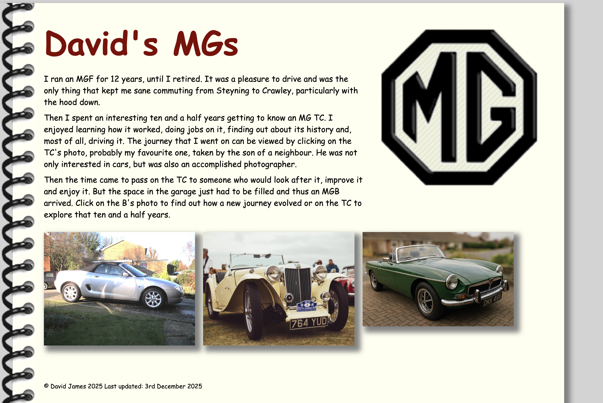
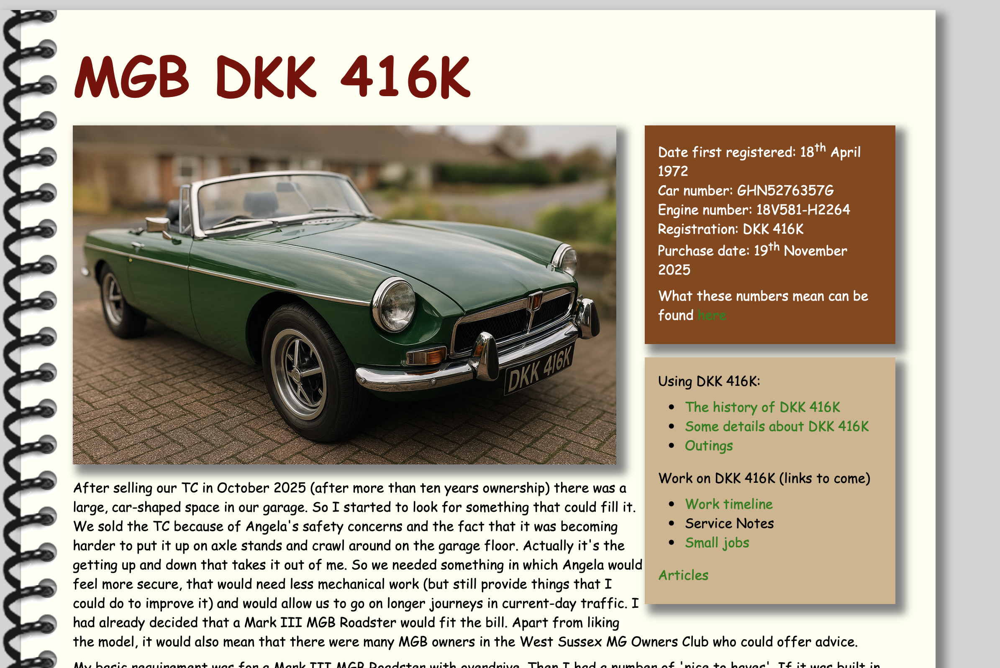

I have a very poor memory and always have. My memory for names is particularly poor. When I was working I would be introduced to someone and as our hands parted so I would have forgotten their name. And as the years pass it only gets worse.
So ,as you might imagine, I use a number of aids to help me remember things to come and things that have already taken place. I would be lost without the calendar, shared across my phone, laptop and desktop computers and my ‘to-do list’ reminds me of the small (and not so small) jobs that I have to do. As for past events, I use two tools. The first is a journal (electronic of course) that I write daily. I started this on my first day of retirement in 2013 and my intent was to record my thoughts, but usually it is little more than a note of what we have done during that day. At least I can search it when I want to know when I did something. The second tool is my web sites.
Quite some years ago, long before I retired, I started recording more major events on a web site. It started when our computer came with some web page editing software and our broadband supplier at the time offered a web hosting service. The earliest event recorded is a visit we made to Florida and up the eastern seaboard of the USA to New York in 2006, when our daughter was working at the University of Florida.
When the software was withdrawn I looked at alternatives. I found that the WYSIWYG (what you see is what you get) editor generated masses of convoluted html code, where html stands for Hypertext Markup Language. I soon realised that it could be done with much simpler code and that I wasn’t really trying to do anything complicated. Since the content and its style are just text, and so not dependent on any particular application, my records are independent of software application providers and so easier to maintain into the future. So I found out more about html and remade my existing web pages. I also moved my pages to a free web server.
When I bought TC4985 in 2015 I recorded all that I found out about the car and details of all the work I did to it on its own web site. When I bought the B I created a page that takes you to the sites for both cars. You can see it at https://djsmgs.github.io/MGs/. Just clicking on either the photo of the TC or of the B takes you to their sites. You will notice that the TC’s site has a lot more content than that of the B. But then, the TC’s site covers over ten years of owning, driving and working on the car. So I fully expect the B’s site to expand considerably over the next few years.

So my message is that, with a little learning (and experimentation) you can not only obtain a new skill, but also create a record of your MG whilst you own it. You can see from this simple example that a web page is just text, using ‘tags’ (opening and closing) for each part, some of which are nested. So the outer html tag contains a head tag and a body tag. In this example the body tag contains a heading and two paragraphs. That is the content. What they look like on the screen is defined by the content of the style tag within the head. More usually, the style statements are put into a separate file that is then just referenced in the head. In this way all your pages can use the same set of styles so that they all follow the same scheme. There are, of course, tags for inserting photos and diagrams, for building lists and tables and more complicated things (see the ‘Outings’ page for example).
You can find many web sites that provide an introduction to HTML by simply searching the web. Then all you need is a text editor, which you probably already have. So, you can learn a new skill. Not only that, you can share your MG and your experiences of driving and maintaining it with other enthusiasts.